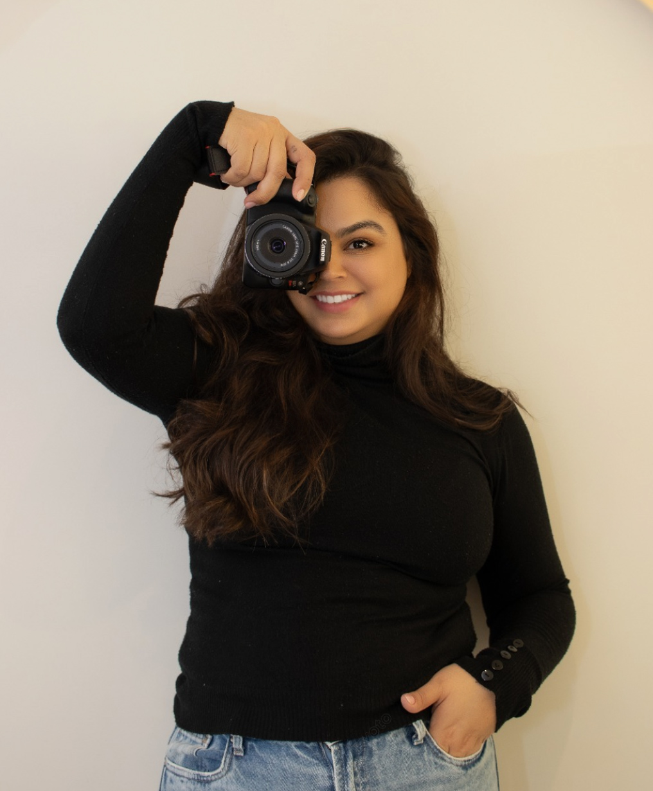

Sobre mim
Sou Paula Cardoso, fotógrafa, mulher, esposa e mãe. Encontro beleza nas pessoas, na natureza e nos detalhes que muitas vezes passam despercebidos.
Tenho 37 anos, sou cristã, casada com Fábio, mãe do Davi, um menino de 12 anos. Minha família e minha fé fazem parte de quem sou e da forma cuidadosa como recebo cada pessoa e cada história.

Uma paixão que começou cedo.
A fotografia me acompanha desde pequena. Com o tempo, essa curiosidade se uniu à minha formação em Publicidade e se transformou em uma maneira muito particular de observar o mundo.
Gosto de contemplar a beleza natural das pessoas e da natureza. As cores do céu, as paisagens, uma expressão espontânea e um gesto discreto sempre chamam minha atenção. Meu olhar procura aquilo que é verdadeiro, mesmo quando parece simples.
Para que você se reconheça.
Meu trabalho é especialmente dedicado às mulheres. Antes de fotografar, procuro compreender quem está diante de mim, sua personalidade, seu momento e o que deseja expressar.
Cada ensaio é conduzido para que a mulher se sinta confortável, respeitada, bonita e segura. Valorizo a beleza natural, direciono com leveza e busco expressões verdadeiras, sem artificialidade excessiva. Quero que cada cliente se reconheça nas próprias fotografias e leve consigo memórias que tenham significado.
Conduzo cada trabalho com responsabilidade, dedicação, sensibilidade e atenção aos detalhes. Tenho compromisso com cada cliente, com cada história e com o cuidado necessário para transformar momentos em imagens honestas e presentes.
Vamos conversar